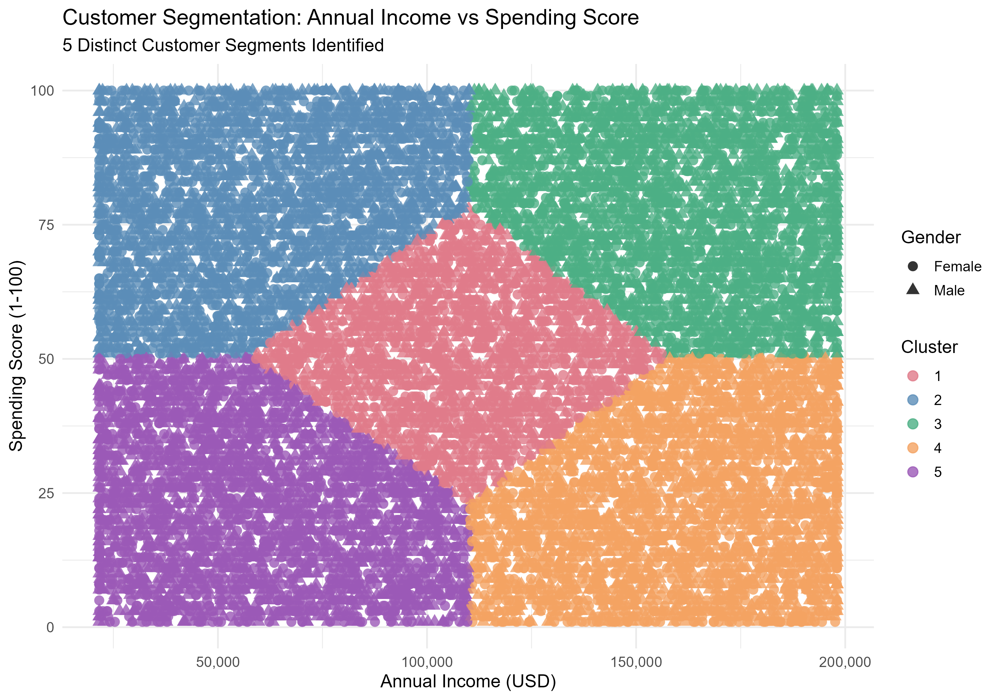
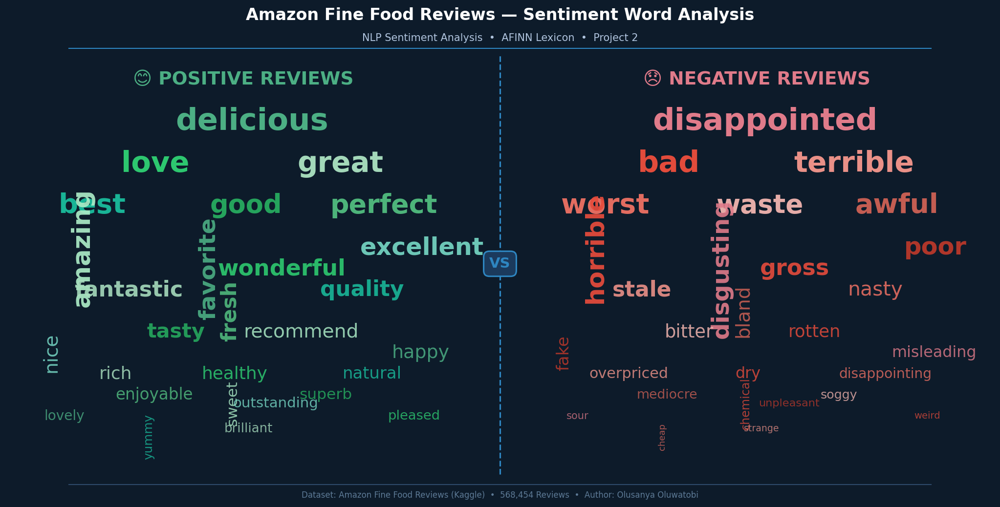

Welcome to my portfolio, where data science meets practical innovation. My projects demonstrate:
- Proficiency in R, SQL Server, and Power BI
- Skills in machine learning, NLP and customer segmentation
- Expertise in cleaning and transforming raw data
- Skills in creating insightful data visualizations
- Ability to build end-to-end analytical pipelines
Data-Driven Innovation Showcase
My portfolio features 6 projects that demonstrate my comprehensive
approach to data analysis, machine learning, and automation:
1. Customer Segmentation (R & Machine Learning)
2. Sentiment Analysis (R & NLP)
3. Financial Dashboard (R & Power BI)
4. Data Cleaning (SQL Server)
5. Data Visualization (Power BI)
6. Twitter Bot (R)

Customer Segmentation using R
In this project, I performed customer segmentation on a dataset of 15,079 mall customers using K-Means Clustering in R. The analysis covered data cleaning, exploratory data analysis, optimal cluster detection using the Elbow, Silhouette and Gap Statistic methods, and rich visualizations to identify 5 distinct customer groups based on Annual Income and Spending Score — delivering targeted business recommendations per segment.

Amazon Reviews Sentiment Analysis (NLP + R)
In this project, I built a complete NLP pipeline on 568,454 Amazon Fine Food Reviews. Using the AFINN lexicon for sentiment labelling and TF-IDF for feature extraction, I trained and compared 4 machine learning models — Naive Bayes, SVM, Logistic Regression, and Random Forest — evaluating each on Accuracy, F1 Score, Precision, Recall, and AUC-ROC to identify the best performing classifier.

S&P 500 Financial Dashboard (R + Power BI)
In this project, I preprocessed 24,654 trading days of S&P 500 data (1927–2026) in R — engineering 12 financial features including moving averages, rolling volatility, and Bullish/Bearish signals. I then built an interactive Power BI dashboard with 7 visuals, 6 KPI cards, and 15 DAX measures, revealing a cumulative market return of over 39,000% since 1927.
Data Cleaning using SQL Server
In this project, I cleaned and standardised raw housing data in SQL Server — handling null values, removing duplicates, reformatting date columns, and restructuring address fields to produce a clean, analysis-ready dataset.

Power BI Dashboard
In this Power BI dashboard, I transformed raw survey data from data professionals into meaningful and actionable insights — covering salary trends, tool preferences, job satisfaction, and career demographics across the data industry.

Twitter Bot using R
I developed a Twitter bot using R that automates posting tweets, interacts with users, and analyses trending hashtags — demonstrating my ability to automate complex workflows and integrate APIs programmatically using R.